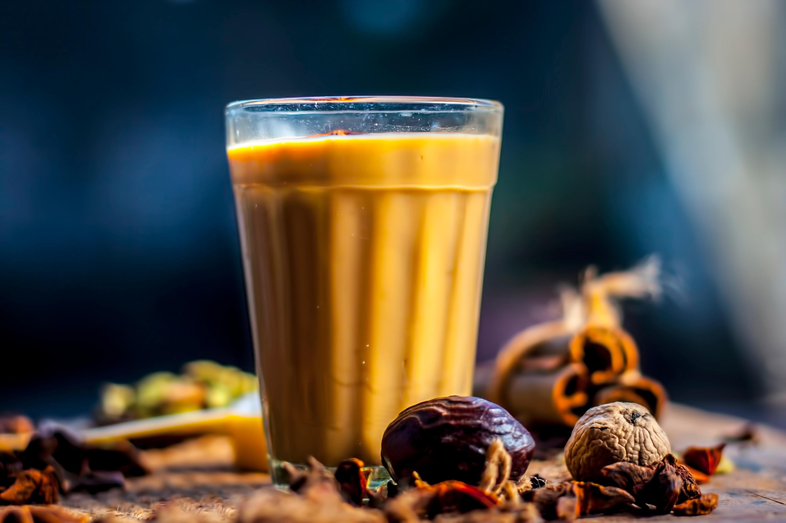
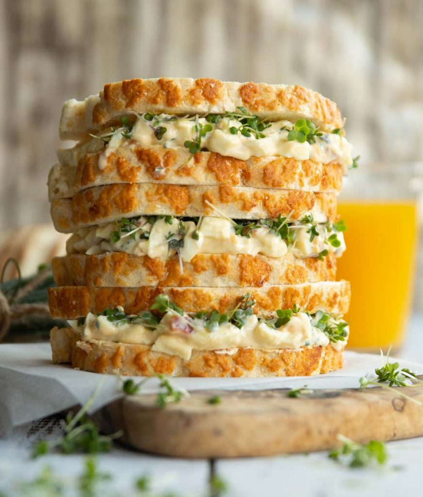
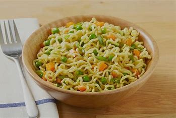
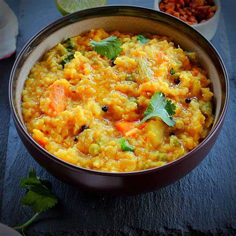

- Ingredients:paani,dudh,chai patti,adrak,long,elachi,cheeni.
- Steps:
- Boil water with chai patti.
- Add milk,ginger,long,elachi and sugar in it.
- Boil it as much as you want.
- Note: More boiling gives more flavours.
- Ingredients:paani,dudh,coffee powder and sugar.
- Steps:
- Take a cup and add some sugar and coffee in it.
- Add some water and stir it to make a creamy paste.
- Boil the milk and add the creamy paste to it.
- Add some more sugar if you want to.
- Note: Java and coffee-- the best combo.

- Ingredients:Bread,Mayo,Red-sauce,vegetables,Salt,Chilli Flacks.
- Steps:
- Take all the chopped veges in a bowl and add mayo and some sauce in it.
- Add the salt and chilli Flacks and prepare the filling.
- Toast the bread from both sides..
- Fill the fillings between two breads.
- Note:Cut the bread in triangle shape and enjoy.

- Ingredients:Maggie,vegetables,water,Ghee.
- Steps:
- Take a fry pan and saute the chopped vegetable in ghee.
- Add water accordingly and all the maggie.
- When the water is boiling add the maggie masala.
- If you want the soupy maggie then remove it from pan early.
- Note:Add some chilli Flacks and origano for more flavours.

- Ingredients:Socked rice,vegetables,Spices,Salt,Water.
- Steps:
- Saute the chopped vegetables with spices.
- Add cutted potatos and some water to boil.
- When the potatos get soft add the rice to it and wait to cook.
- Note:Serve it hot with ghee for good flavours.
- Ingredients:Biscuit, milk,sugar,any chocolate, ENO
- Steps:
- Crush the biscuits into powder and add milk to it to make a paste.
- Take some water in the kettle and boil it.
- Add the ENO to the paste and put the vessel in the kettle.
- Wait for 15 mins and then check the cake with a tooth pick.
- Melt the chocolate and put it on the cake and enjoy!!
- Note:Move your hand in one direction while making the paste